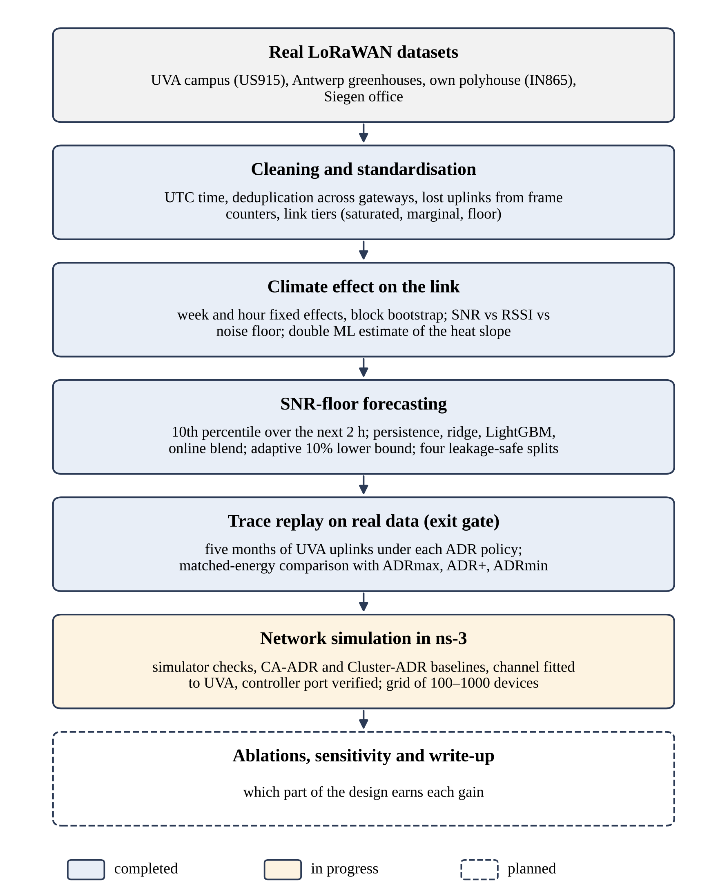
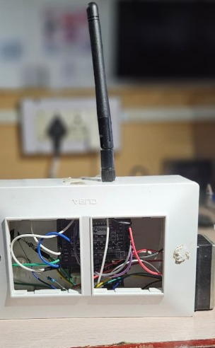
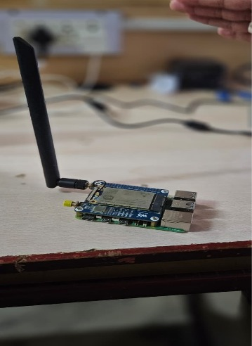
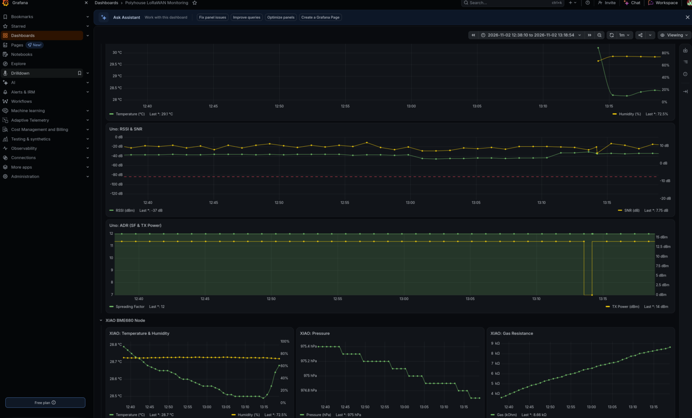
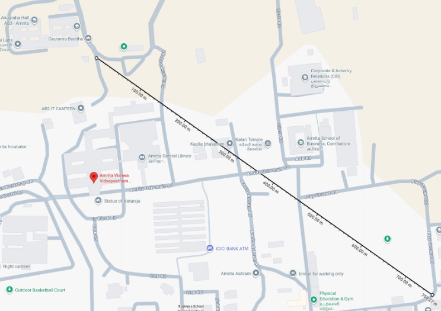
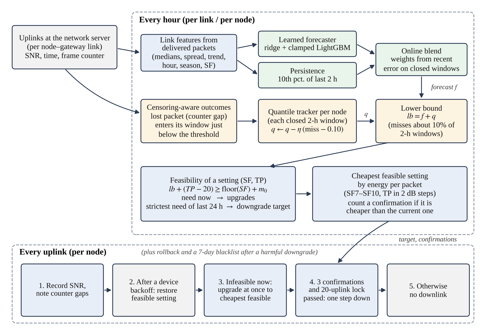

Climate-Aware Adaptive Data Rate for LoRaWAN
The standard ADR rule uses one fixed safety margin (10 dB) for every link. That margin is wasteful for steady links and too small for links that fade, and the rule cannot see the packets it has already lost. This project builds an ADR controller that sizes the margin of each link from that link's own measured behaviour, counts lost packets as evidence, and uses climate information only where measurements show it helps.
The project at a glance
| Question | Answer so far |
|---|---|
| Does heat change LoRaWAN links? | Heat at the sensor costs about 1.8 dB of SNR per 10 °C. Heat on a temperate campus did not change SNR, but it did shift the gateways' RSSI readings. |
| Does climate improve SNR forecasts? | Only for links silent for 12 hours or more. With a full history, recent SNR already carries the effect. |
| Does the new controller beat standard ADR on real data? | Yes. On five months of real uplinks it lost 0.44% of deliverable packets, against 11.65% for the standard rule, and at equal energy it lost significantly fewer packets. |
| Does it work in a large simulated network? | The simulator has been validated and the controller ported to it; the large simulation runs are in progress. |
Project workflow

LoRaWAN and ADR Basics
This page explains the terms the rest of the documentation uses.
How a LoRaWAN network works
A LoRaWAN network has three parts:
- End devices (nodes): small battery-powered sensors. They send short messages called uplinks.
- Gateways: receivers that forward every uplink they hear to the server. One uplink can be heard by several gateways.
- Network server: collects the uplinks, removes duplicates, and sends commands back to the nodes when needed (downlinks).
LoRa uses unlicensed radio bands, which differ by region. India uses IN865 (865–867 MHz), Europe EU868, and the United States US915. Because the band is shared, each device may only transmit for a limited share of the time.
The two settings that matter
Spreading factor (SF). LoRa can spread each bit over a longer chirp. Higher SFs (SF7 up to SF12) decode weaker signals, about 2.5 dB weaker per step, but each step roughly doubles the time on air.
| SF | Lowest SNR it decodes | Time on air (relative) |
|---|---|---|
| SF7 | −7.5 dB | 1× |
| SF8 | −10 dB | about 2× |
| SF9 | −12.5 dB | about 4× |
| SF10 | −15 dB | about 8× |
| SF11 | −17.5 dB | about 16× |
| SF12 | −20 dB | about 32× |
Transmit power (TP). Raising the power by 1 dB adds 1 dB of link budget but draws more supply current. Longer time on air and higher power both drain the battery. Longer transmissions also occupy the shared channel for longer, so packets from different nodes collide more often.
Measuring link quality
- SNR (signal-to-noise ratio): how far the signal stands above the noise, in dB. This is what decides whether a packet decodes.
- RSSI (received signal strength): the received power, in dBm. This project found that RSSI can shift with the gateway's own temperature, so it is not used for decisions.
- PDR (packet delivery ratio): the share of sent packets that arrive.
- Frame counter: every uplink carries a counter that increases by one. A gap in the counter tells the server that packets were sent but lost.
Adaptive Data Rate (ADR)
ADR is the mechanism by which the network server chooses each node's SF and power, and sends them in a LinkADRReq command.
The common server rule works like this:
- Take the highest SNR among the node's last 20 uplinks.
- Subtract the SNR the current SF needs, and a fixed installation margin of 10 dB.
- For every 3 dB left over, lower the SF by one step (or the power, once at SF7).
Variants use the average SNR (called ADR+) or the minimum (ADRmin) instead of the highest.
Why the standard rule falls short
- One margin for every link. A steady link needs much less than 10 dB, so it wastes energy. A fading link needs more, so it loses packets.
- The server never raises the SF. If a node is set too lean, it keeps losing packets until the node notices it has not heard from the server for 64 + 32 uplinks and falls back by itself.
- The server only sees what arrives. Packets lost at a lean setting never reach it, so the link looks healthier than it is. Any method that learns only from delivered packets has this blind spot.
- The environment changes. Heat, rain and foliage change link quality over hours and seasons.
Hardware and Range Test
Alongside the public datasets, the project built its own LoRa node and gateway to test real links on campus, in the Indian IN865 band.
Equipment
| Part | Description |
|---|---|
| End node | Arduino Uno with a ThingZkit LoRaWAN shield and an external antenna, mounted in an enclosure |
| Gateway | Raspberry Pi 5 with a Waveshare LoRaWAN gateway HAT and an external antenna |


Live monitoring dashboard
Data from the deployed node is visualised in real time using Grafana. The dashboard shows temperature and humidity at the node, RSSI and SNR on the uplink, the spreading factor and transmit power chosen by ADR, and environmental sensor readings (pressure, gas resistance) from the XIAO BME680 node.

Range test
The range test measured the link along a straight path of about 760 m across the Amrita Coimbatore campus, through a built-up area of academic blocks, roads and trees.

Interference from the hardware itself
The range test showed that the hardware itself limits the link, before the environment does.
Power supply noise. Powering the node from USB introduces a ripple of 50–100 mV on the supply. That ripple raises the receiver's noise floor and reduced the receiver sensitivity by about 14 dB, which makes the radio partly "deaf".
Crystal drift at SF12. At SF12 a single packet lasts about 2 seconds. During that time the radio's crystal oscillator drifts slightly with temperature, which smears the received signal. This added a decoding penalty of about 5 dB.
Why this matters for the project
Both effects change the link budget in a way a fixed margin cannot know about. The power-supply effect is constant for a given setup, while crystal drift grows with SF and with temperature. That is part of why the proposed controller learns each link's margin from that link's own behaviour, instead of assuming one margin for every node.
Lessons for the deployment:
- Power the node from a clean, regulated supply or a battery, not a USB port.
- Prefer radios with a temperature-compensated crystal oscillator (TCXO) when long packets (SF11, SF12) are needed.
Datasets
The project uses four public LoRaWAN datasets. Each captures a different environment and covers a different span of time. The table below summarises what each dataset provides.
Summary
| Name | Environment | Band | Nodes | Duration | Key feature |
|---|---|---|---|---|---|
| UVA campus | Urban outdoor | US915 | 9 | ~5 months (Jan–Jun 2025) | Long-term deployment; frame counters allow loss recovery |
| Greenhouse (Antwerp) | Agricultural indoor | EU868 | 4 | Several weeks | Temperature logged at the node; heat effect measurable |
| Indoor office (Siegen) | Indoor | EU868 | 1 | Several days | Detailed path-loss with environmental factors |
| Urban outdoor (Medellín) | Urban outdoor | AU915 | 1 | Several campaigns | Path-loss measurements with weather logs |
Data cleaning
All four datasets were brought to a common format before analysis:
- Lost uplinks restored from frame counters. When a gap appears in the frame counter sequence, the missing packets are added back as lost entries so the full transmission history is known.
- Duplicate uplinks removed. When the same uplink is heard by more than one gateway, the best-SNR copy is kept.
- Timestamps aligned. All timestamps were converted to UTC and checked for monotonicity.
- Outliers flagged. SNR values more than five standard deviations from the node's rolling mean were flagged and excluded from training.
Why these four datasets?
Each dataset provides a different kind of evidence. The UVA campus dataset is long enough to train and test a forecaster with a proper chronological split. The greenhouse dataset is the only one with node temperature logged alongside the link, which is what makes the heat analysis possible. The indoor and Medellín datasets provide path-loss diversity and check that the cleaning pipeline generalises.
Climate Findings
Temperature affects LoRaWAN links in two places: at the node's radio hardware and at the gateway. The findings from the two sites are different, and both matter for how the controller is designed.
Heat at the node (greenhouse site)
In the Antwerp greenhouse, the node sits inside a warm, humid space. As the air temperature rises, the node's SNR falls. A linear regression on the greenhouse links gives:
SNR loss ≈ 1.8 dB per 10 °C rise in node temperature.
This is consistent with two known effects: the radio's noise figure worsens with heat, and the crystal oscillator drifts with temperature, which smears long-SF packets (see also the hardware section). Both effects lower the effective SNR that the gateway measures.
The effect is real but modest. At the spreading factors used in practice (SF7–SF10), the time on air is short enough that crystal drift is small. The main contribution is the noise-figure effect.
Heat at the gateway (UVA campus site)
On the UVA campus, the gateway is mounted outdoors. On warm afternoons the gateway's own hardware warms up. The measured effect is:
- RSSI shifts with gateway temperature — by roughly 0.5 dBm per °C in some periods.
- SNR does not shift. The noise floor and signal floor move together, so the ratio is stable.
This means RSSI cannot be trusted as a link-quality indicator at this site. The proposed controller uses SNR only, not RSSI.
When does climate help the forecast?
| Condition | Does climate improve the SNR forecast? |
|---|---|
| Link active in the last 12 hours | No — recent SNR already carries the temperature effect. |
| Link silent for 12+ hours (e.g. overnight gap) | Yes — the temperature trend explains part of the SNR change since the last packet. |
| Site without measurable heat effect (temperate campus) | No — the climate term is turned off for those links. |
The practical result: climate enters the controller only as a "heat guard" for links that have been silent long enough that recent history is stale.
Proposed Method
The controller runs six steps each time an uplink arrives. Each step is described below. The architecture diagram shows how they fit together.

Step 1: restore lost packets
The network server usually only records packets that arrive. This controller reads the frame counter on every uplink and counts the gap since the last one. Those missing counts are added to the node's loss history. This is what allows the controller to see the packets it has already lost — the standard rule cannot do this.
Step 2: forecast the SNR floor
A LightGBM model predicts the lower end of the SNR distribution over the next hour, using:
- Recent SNR statistics (mean, percentiles, trend over the last 2 hours).
- Hour of day and day of week (captures daily patterns).
- Temperature (only for links and sites where the heat effect was confirmed).
A "persistence" baseline — "the next hour will look like the last 2 hours" — is blended with the learned model. The blend is chosen by cross-validation.
Step 3: calibrate the bound
A per-link calibration offset q is added to the forecast so that the lower bound misses the true SNR floor at most 10% of the time. This is conformal prediction: the offset is set so that the bound's historical miss rate matches the target. The offset is updated after each new hour of data, so it adapts to changes in the link.
Step 4: choose the setting
A setting (SF, power) is safe when:
bound + (power − 20 dBm) ≥ SF threshold + 2 dBAmong safe settings, the controller picks the one with the lowest energy per packet: supply voltage × current at that power × time on air at that SF.
Step 5: apply the rules on each uplink
- Record the SNR at each gateway and note any frame-counter gap.
- If the node fell back by itself (device backoff), restore the server's safe setting.
- If the current setting is unsafe now, upgrade at once to the cheapest safe one.
- Otherwise, downgrade only one step at a time, and only when:
- the cheaper setting would have been safe in every hour of the last 24 hours;
- it has been confirmed in 3 hourly checks in a row;
- at least 20 uplinks have passed since the last upgrade.
- Otherwise, send nothing.
If a downgrade is followed by more losses than expected, it is rolled back and that setting is blocked for 7 days.
Why the asymmetry: a too-lean setting loses packets that cannot be recovered, while a too-robust one only costs some energy. So moving to safety is immediate, and saving energy is slow and careful. Sending nothing when nothing needs to change also saves downlink airtime, which is scarce in LoRaWAN.
Step 6: climate as a heat guard
For links silent for 12 hours or more, at sites where heat reaches the node, the bound is lowered by the measured heat slope times the part of the temperature rise that the link's history and the hour of day cannot explain. Everywhere else, climate is not used.
Results
How the controller was tested
The controller was tested by replaying five months of real uplinks from the UVA campus (12 January to 11 June 2025): 9 nodes and 380,831 uplinks, of which 4.0% were already lost in the original data.
For each uplink, the replay asks: would this packet still have arrived if the node had used the setting this policy chose? SNR changes decibel for decibel with transmit power, and the SNR each SF needs is known, so this can be worked out from the recorded SNR. Every policy learns only from the packets its own settings delivered, as it would in a real network.
The forecaster was trained only on data from before the replay. The controller then watched for a week without acting, to calibrate, before taking control.
Forecast accuracy
| Split | Average baseline | "Last 2 h repeats" | Proposed blend | Bound miss rate (target 10%) |
|---|---|---|---|---|
| UVA, chronological | 3.25 dB | 2.37 dB | 1.94 dB | 10.0% |
| UVA, heat days | 2.75 dB | 2.00 dB | 1.65 dB | 10.2% |
| UVA, unseen node | 3.31 dB | 1.94 dB | 1.61 dB | 9.8% |
| UVA, unseen gateway | 4.00 dB | 2.00 dB | 1.80 dB | 9.9% |
| Greenhouse, chronological | 2.40 dB | 0.86 dB | 0.81 dB | 10.0% |
Mean absolute error of the forecast. The blend beat both baselines on every split. The lower bound missed 9.1–12.0% of windows everywhere it was tested.
The controller against standard ADR
| Policy | Delivery ratio | Packets lost by the setting | Energy per delivered packet | Downlink commands per node per day |
|---|---|---|---|---|
| ADRmax (the standard rule) | 83.00% | 11.65% | 6.21 mJ | 0.11 |
| ADR+ (average SNR) | 87.01% | 7.38% | 7.75 mJ | 0.53 |
| ADRmin (minimum SNR) | 93.55% | 0.42% | 18.39 mJ | 2.23 |
| Proposed | 93.53% | 0.44% | 18.21 mJ | 0.30 |
The standard rule is cheap only because it loses about one packet in nine.
Fair comparison at equal energy
Each policy spends a different amount of energy, so each was also run across a range of margins and compared at the same energy. At the same energy as the proposed controller:
- it lost about 2.6 percentage points fewer packets than the standard rule;
- it lost about 0.5 percentage points fewer packets than ADR+;
- both differences are statistically significant (95% intervals from resampling whole days).
Against ADRmin, the most cautious standard rule, it reached the same loss and energy with 6 times fewer downgrades and 7 times fewer downlink commands.
What each part contributes
| Variant | Packets lost | Energy | Bad downgrades | Bound miss: believed / real |
|---|---|---|---|---|
| Full controller | 0.44% | 18.21 mJ | 2.6% | 10.0% / 10.0% |
| Without the learned model | 0.37% | 18.76 mJ | 2.4% | 10.0% / 10.0% |
| Fixed 10 dB margin instead of the bound | 0.48% | 18.02 mJ | 9.1% | n/a |
| Downgrades as fast as upgrades | 0.60% | 17.33 mJ | 36.1% | 10.0% / 10.1% |
| Ignoring lost packets | 2.09% | 14.30 mJ | 18.0% | 9.8% / 59.7% |
- Counting lost packets matters most. Without it, the controller thinks it is right 90% of the time when it is really wrong 60% of the time.
- Slow downgrades matter. Without them there were 1,250 downgrades instead of 266, and over a third of them went wrong.
- The learned model improves the forecast but not the final decisions. Per-packet noise (about 5 dB) and the 2.5 dB step between SFs swamp the small gain.
A rejected idea: filtering out collisions
In busy simulated networks, packets lost to collisions looked like a weak link and pushed nodes to SF12. A filter was tried that counted a loss only if it looked like a fade. Tested on the real data, it failed: the controller believed it missed 10% of windows while it really missed 45%. The filter was therefore removed. Telling collisions from fades without this bias remains an open problem.
Simulation (ns-3)
The real-data replay has 9 nodes and no collisions. To test the controller in large, busy networks, the project uses the ns-3 network simulator (release 3.48) with its LoRaWAN module.
What was added to ns-3
- The proposed controller, as an ADR component on the network server.
- Two published baselines: CA-ADR (Marini et al., 2021), which assigns data rates over the whole network to reduce collisions, and Cluster-ADR (Gorrela and Choudhury, 2025), which groups nodes by path loss.
- A realistic fading channel. Stock ns-3 links stay at a fixed strength apart from collisions. The new model adds per-link variation on three timescales, fitted to the UVA links: a slow drift over days (1.23 dB), a short variation over about 2 hours (1.31 dB), and per-packet noise (5.2 dB).
- A climate channel, which replays a real greenhouse temperature trace into the link.
- A speed fix: the module stored and rescanned every packet, so long runs slowed down quadratically. A 40-day run dropped from over 10 minutes to 5 seconds with identical output.
Checking the simulator before trusting it
| Check | Result |
|---|---|
| Collisions behave like ALOHA | With one packet per device, received packets rose from 78 (100 devices) to 159 (400 devices), then fell to 43 (1,600 devices): the expected rise-and-fall shape. |
| Standard ADR matches a published study | Starting at the slowest data rate, the final data-rate distribution over 1,000 devices matched Finnegan et al. (2020) within 2.4 percentage points, and 99.9% of devices ended where the ADR arithmetic predicts. |
| The C++ controller matches the Python reference | On the same simulated packets: calibration identical, all 15,199 hourly bounds identical, all 1,066 decisions identical. |
The planned experiment
| Setting | Values |
|---|---|
| Number of devices | 100, 500, 1,000 |
| Gateways | 1 and 3 |
| Traffic | one uplink every 10 minutes, and every hour |
| Duration | 8 simulated days, the first 2 excluded |
| Repetitions | 3 random seeds per setting |
| Policies | no ADR, standard ADR, ADR+, ADRmin, CA-ADR, Cluster-ADR, and the proposed controller across its margin settings |
| Climate | with and without a real greenhouse heat trace |
These runs are in progress.
Status and Roadmap
Completed
| Stage | Outcome |
|---|---|
| Data collection and cleaning | Four real datasets in one standard format; lost uplinks restored from frame counters |
| Climate measurement | Heat at the node costs about 1.8 dB per 10 °C; ambient heat shifts gateway RSSI, not SNR |
| SNR-floor forecaster | Beats both baselines on every split; the bound stays at about 10% misses |
| Controller on real data | 0.44% loss against 11.65% for standard ADR; better than ADRmax and ADR+ at equal energy |
| Ablation study | Counting lost packets and slow downgrades are the parts that matter |
| Hardware and range test | Node and gateway built; hardware noise and crystal drift identified |
| ns-3 set-up | Simulator validated; baselines, fading channel and controller implemented and cross-checked |
In progress
- Large-scale ns-3 runs: 100 to 1,000 devices, against standard ADR, CA-ADR and Cluster-ADR.
- ns-3 runs with a real greenhouse heat trace.
- A fair re-test of a simpler, lower-noise SNR estimator without the rejected collision filter.
Next
- Test the heat guard in the closed-loop replay on the greenhouse sites.
- Sensitivity of the results to the controller settings (confirmations, lock length, margin, 24-hour window).
- A longer polyhouse deployment that logs the gateway's own temperature, to confirm where heat acts in the Indian band.
- Final thesis and a conference paper.
Future work
- Learned step size: let a small model set the calibration step for each node from its traffic rate, link age and network density.
- Collisions versus fades: a test that separates the two without relying only on delivered packets, for example by comparing losses across gateways and across nodes on the same channel.
- Gateway RSSI correction: a per-gateway temperature correction so RSSI can be trusted again.
Glossary
| Term | Meaning |
|---|---|
| ADR | Adaptive Data Rate: the mechanism that sets each node's spreading factor and power |
| ADRmax, ADR+, ADRmin | The standard ADR rule applied to the highest, average or lowest SNR of the last 20 uplinks |
| Backoff (device) | A node raising its own power or SF after hearing nothing from the server for 64 + 32 uplinks |
| Bound miss rate | How often the real SNR floor fell below the controller's lower bound; the target is 10% |
| CA-ADR | Collision-Aware ADR, a published method that assigns data rates network-wide to reduce collisions |
| Censoring | Losing sight of weak packets because they never arrive; the proposed controller corrects for it |
| Downlink | A message from the server to a node, such as a LinkADRReq command |
| Frame counter | A number in every uplink that increases by one; gaps reveal lost packets |
| Gateway | A receiver that forwards uplinks to the network server |
| IN865 | The LoRaWAN band used in India, 865–867 MHz |
| Induced loss | Packets that would have arrived at the node's original setting but were lost at the setting a policy chose |
| LightGBM | A fast gradient-boosted decision-tree library |
| LinkADRReq | The command the server uses to change a node's SF and power |
| LoRa / LoRaWAN | The long-range radio modulation, and the network protocol built on it |
| MAE | Mean absolute error |
| ns-3 | An open-source network simulator |
| PDR | Packet delivery ratio: the share of sent packets that arrive |
| Persistence | The forecast "the next hours will look like the last hours" |
| q (offset) | Each node's calibration offset, which keeps its bound at a 10% miss rate |
| Ridge regression | Linear regression with a penalty that keeps the coefficients small and stable |
| RSSI | Received signal strength, in dBm |
| SF | Spreading factor, SF7 to SF12: higher is more robust but slower |
| SNR | Signal-to-noise ratio, in dB: decides whether a packet decodes |
| Time on air | How long one transmission takes |
| TP | Transmit power, in dBm |
| Uplink | A message from a node to the network |
References
Datasets
- F. Nikseresht, V. A. Leal Sobral, J. L. Goodall and B. Campbell, "Dataset: Long-term LoRaWAN communication metadata from an urban deployment," in Proc. ACM BuildSys, 2025, pp. 412–417. Data: University of Virginia Dataverse, doi:10.18130/V3/RFTICK.
- R. K. Singh, M. H. Rahmani, M. Weyn and R. Berkvens, "Joint communication and sensing: A proof of concept and datasets for greenhouse monitoring using LoRaWAN," Sensors, vol. 22, no. 4, p. 1326, 2022. Data: Zenodo, doi:10.5281/zenodo.5793685.
- N. M. Obiri and K. Van Laerhoven, "A comprehensive data description for LoRaWAN path loss measurements in an indoor office setting: Effects of environmental factors," IEEE Access, vol. 13, pp. 83148–83170, 2025. Data: Zenodo, doi:10.5281/zenodo.15349731.
- M. González-Palacio, D. Tobón-Vallejo, L. M. Sepúlveda-Cano, S. Rúa, G. Pau and L. B. Le, "LoRaWAN path loss measurements in an urban scenario including environmental effects," Data, vol. 8, no. 1, p. 4, 2023.
LoRaWAN and ADR
- LoRa Alliance, LoRaWAN L2 1.0.4 Specification (TS001-1.0.4), 2020.
- J. Finnegan, R. Farrell and S. Brown, "Analysis and enhancement of the LoRaWAN adaptive data rate scheme," IEEE Internet Things J., vol. 7, no. 8, pp. 7171–7180, 2020.
- M. Slabicki, G. Premsankar and M. Di Francesco, "Adaptive configuration of LoRa networks for dense IoT deployments," in Proc. IEEE/IFIP NOMS, 2018, pp. 1–9.
- S. Li, U. Raza and A. Khan, "How agile is the adaptive data rate mechanism of LoRaWAN?," in Proc. IEEE GLOBECOM, 2018, pp. 206–212.
- R. Marini, W. Cerroni and C. Buratti, "A novel collision-aware adaptive data rate algorithm for LoRaWAN networks," IEEE Internet Things J., vol. 8, no. 4, pp. 2670–2680, 2021.
- A. Gorrela and N. Choudhury, "A clustering-based adaptive data rate technique for industrial LoRaWAN-IoT networks," IEEE Internet Things J., vol. 12, no. 6, pp. 6506–6518, 2025.
- M. A. Lodhi, X. Sun, K. Mahmood and A. Lodhi, "EdgeSense: A hybrid TinyML and deep learning framework for SNR-aware adaptive data rate in LoRaWAN," IEEE Trans. Mobile Comput., vol. 25, no. 10, pp. 17535–17546, 2026.
- J. Aznar-Poveda et al., "MARLTC: A multi-agent reinforcement learning-based interference-aware transmission control for LoRaWAN IoT devices," IEEE Internet Things J., vol. 13, no. 15, pp. 35121–35138, 2026.
Climate and LoRa links
- S. Lavdas, N. Bakas, W. El Hajj and Z. Zinonos, "A climate-aware modeling framework for reliable IoT connectivity: Environmental effects on LoRaWAN signal-to-noise ratio," IEEE Internet Things J., vol. 13, no. 10, pp. 20731–20743, 2026.
- C. A. Boano, M. Cattani and K. Römer, "Impact of temperature variations on the reliability of LoRa: An experimental evaluation," in Proc. SENSORNETS, 2018, pp. 39–50.
Methods
- G. Ke et al., "LightGBM: A highly efficient gradient boosting decision tree," in Proc. NeurIPS, 2017, pp. 3146–3154.
- I. Gibbs and E. Candès, "Adaptive conformal inference under distribution shift," in Proc. NeurIPS, vol. 34, 2021, pp. 1660–1672.
- V. Chernozhukov et al., "Double/debiased machine learning for treatment and structural parameters," Econometrics J., vol. 21, no. 1, pp. C1–C68, 2018.
- ns-3 Network Simulator, release 3.48, nsnam.org.